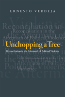

A significant new examination of the possibilities of reconciliation after wars and genocide
A significant new examination of the possibilities of reconciliation after wars and genocide


 A significant new examination of the possibilities of reconciliation after wars and genocide
A significant new examination of the possibilities of reconciliation after wars and genocide

|  |
Unchopping a TreeReconciliation in the Aftermath of Political ViolenceErnesto Verdejacloth EAN: 978-1-43990-054-3 (ISBN: 1-4399-0054-X) |
"Discussions of social reconstruction after political violence commonly expose the psychological and moral obstacles to forgiveness of perpetrators by victims. Ernesto Verdeja's Unchopping a Tree, in contrast, offers a sustained and clarifying analysis of respect and thus moves beyond forgiveness as the key to personal and political reconstruction after mass atrocities. The integration of personal narratives into the conceptual analysis makes this an especially valuable treatment of the daunting and demanding challenges for societies recovering from violence."
—Martha Minow, Harvard University, author of Between Vengeance and Forgiveness: Facing History after Genocide and Mass Violence
Political violence does not end with the last death. A common feature of mass murder has been the attempt to destroy any memory of victims, with the aim of erasing them from history. Perpetrators seek not only to eliminate a perceived threat but also to eradicate any possibility of alternate, competing social and national histories. In this timely and important book, Ernesto Verdeja develops a critical justification for political reconciliation. He asks the questions “What is the balance between punishment and forgiveness?” and “What are the stakes in reconciling?”
Developing a normative theory of reconciliation that differs from prevailing approaches, Verdeja outlines a concept that emphasizes the importance of shared notions of moral respect and tolerance among adversaries in transitional societies. Drawing from reconciliation efforts around the world—and interviews with people involved in such endeavors—Verdeja debates how best to envision reconciliation while taking into account the very significant practical obstacles that confront such efforts.
Unchopping a Tree addresses the core concept of respect at four different social levels—political, institutional, civil society, and interpersonal—to explain the promise and challenges of securing reconciliation and broader social regeneration.
Excerpt available at www.temple.edu/tempress
"I am greatly impressed by Unchopping a Tree. Ernesto Verdeja manages to synthesize an enormous amount of material into a clear and cogently argued framework to guide thinking about processes of reconciliation. He does an excellent job of presenting what he finds to be the strengths and weaknesses of the competing major approaches to this topic on the way to constructing and defending his alternative. His style is both pedagogic and clear-sighted. I think this will be an important work that makes a clear contribution to the literature."
—Ron Eyerman, Yale University, author of Cultural Trauma: Slavery and the Formation of African American Identity
"Verdeja has written an excellent book that should be recognized as an important contribution to current debates on reconciliation. It provides a much-needed comprehensive and multilayered normative perspective, and it will be of great value to our global concern with the question of how societies can deal with an atrocious past."
—Thomas Brudholm, University of Copenhagen, author of Resentment’s Virtue: Jean Améry and the Refusal to Forgive
"In this richly constructed analysis, Verdeja develops a justification for political reconciliation in postconflict societies.... Summing Up: Recommended."
—CHOICE
"Verdeja’s piece is strong on conceptualisation and provides clear lenses with which to examine and advance his thesis. Reconciliation is multi-faceted, inhabiting four different levels--the political, the institutional, civil society, and the interpersonal, and he deftly examines each in turn.... There is a skillful use of international examples too that provides illustration to his conceptualisation, particularly in discussing the forms that these processes may take. His discussion of the use of apologies as both a simple tool of acknowledgment and a complex future-focused mechanism allowing critical readings of histories, promises of practical redress, and a renegotiation of moral relationships is particularly well done."
—Perspectives on Politics
"[A] refreshing foray into critical reconciliation studies. Beautifully rendered in stark prose, thickly nuanced with ample research, and boldly defiant of the conventional wisdom, Verdeja’s work represents an important intervention.... Whatever one’s misgivings concerning the unlikelihood of reconciliation’s success, in the end, Verdeja’s text succeeds marvelously. If the mark of a very good book is one that provides for a space that allows for the opening and sustained expression of questions and questioning, rather than one that promotes closure or final conclusions, then Unchopping a Tree should be considered truly outstanding, for it goes one step further: it inspires a swell of hope that, despite its implausibility, an ample response to the legacies of political horror is still possible."
—Law, Culture, and the Humanities
Also available in e-book
Acknowledgments
1. Theorizing Reconciliation
2. Key Normative Concepts
3. Political Society
4. Institutional and Legal Responses: Trials and Truth Commissions
5. Civil Society and Reconciliation
6. Interpersonal Reconciliation
7. Conclusion
Notes
References
Index
 | Ernesto Verdeja is an Assistant Professor of Political Science and Peace Studies at the University of Notre Dame. |
Political Science and Public Policy
Sociology
Philosophy and Ethics
Politics, History, and Social Change, edited by John C. Torpey.
This series will disseminate serious works that analyze the social changes that have transformed our world during the twentieth century and beyond. The main topics to be addressed include international migration; human rights; the political uses of history; the past and future of the nation-state; decolonization and the legacy of imperialism; and global inequality. The series will also translate into English outstanding works by scholars writing in other languages.
© 2015 Temple University. All Rights Reserved. This page: http://www.temple.edu/tempress/titles/2043_reg.html.